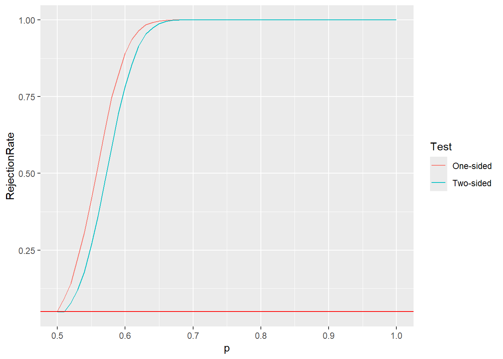
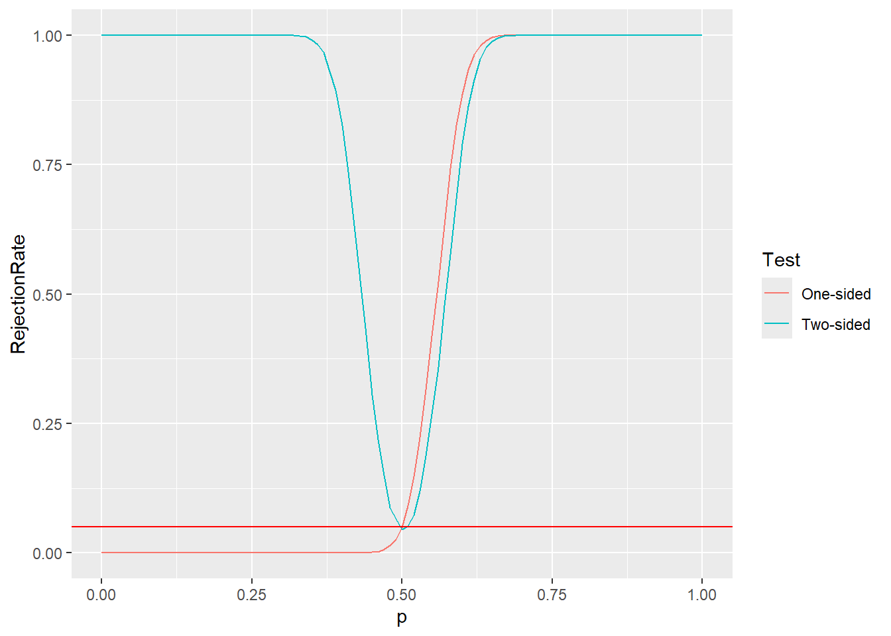
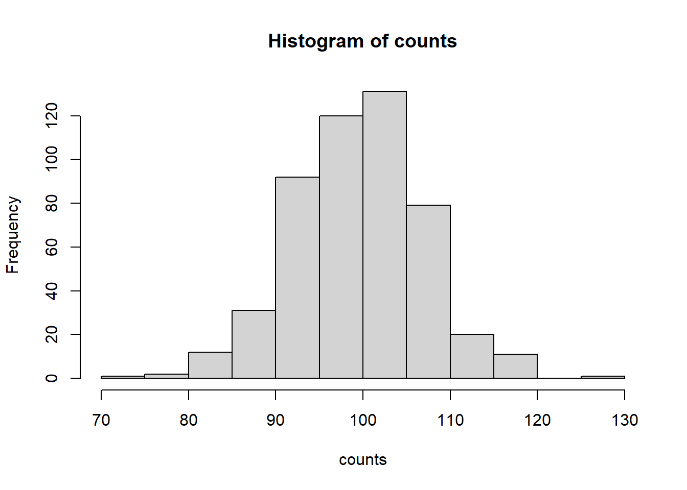

# size=200, prob=0.5 because those are the parameters of our model
qbinom(0.95, size=200, prob=0.5)[1] 112This week, we will continue our discussion of statistical hypothesis testing. We’ll look at more complicated examples of statistical hypotheses, and introduce other ways to test those hypotheses beyond the Monte Carlo-based methods from last week. In the process, we will (finally) completely formalize the Neyman-Pearson hypothesis testing framework, and we will discuss the ways that things can go wrong when performing hypothesis testing (i.e., the types of errors we can make). We’ll see how these different kinds of errors let us compare different tests of a particular null hypothesis.
After this lesson, you will be able to
When we perform a statistical hypothesis test and produce a p-value, this p-value denotes a probability that, if the null hypothesis were true, we would see results at least as extreme as the observed data. Except in some really extreme circumstances, this p-value is not zero. Thus, there is some probability that, even if the null hypothesis is true, we observe very unlikely data and, as a result, reject the null hypothesis incorrectly. Similarly, even if the null hypothesis is false, the data that we observe may not be “weird” enough to constitute sufficient evidence against the null hypothesis, and we may conclude, incorrectly, that the null hypothesis is true.
The possible outcomes are summarized in the table below. Something like this table is probably familiar to you from other classes, either in statistics or elsewhere:
\[ \begin{aligned} & ~~~~ {\bf H_0 \text{ true }} & {\bf H_0 \text{ false} } \\ {\bf \text{Do not reject } H_0 } & ~~~ \text{ True negative } & \text{ False negative } \\ {\bf \text{Reject } H_0 } & ~~~ \text{ False positive } & \text{ True positive } \end{aligned} \]
The bottom-left and top-right entries of this table are the kinds of errors we can make. In statistics, we often call them “Type I” and “Type II” errors, respectively.
Said another way:
Example: coin flipping
Let’s suppose that we are flipping a coin and we want to assess whether or not the coin is fair. We model coin flips as being drawn from a Bernoulli with success parameter \(p\). A fair coin corresponds to \(p=1/2\), so our null hypothesis is \[ H_0 : p = 1/2, \]
where \(p \in [0,1]\) is the probability of a coinflip landing heads.
We read that as something like “H nought is that \(p\) is 1/2” or “the null hypothesis is that \(p=1/2\)”.
A Type I error would correspond to the case where \(p=1/2\) but we conclude incorrectly) that the coin is not fair, i.e., we conclude that \(p \neq 1/2\).
A Type II error would correspond to the case where \(p \neq 1/2\) (i.e., the null hypothesis is not true), but we conclude (incorrectly!) that the coin is fair.
Example: lady tasting more tea
Recall our lady tasting tea example, where our null hypothesis was \[ H_0 : \text{ Muriel Bristol is guessing at random } \]
A Type I error would correspond to the case where Bristol is guessing completely randomly (i.e., cannot tell the milk-first cups from the milk-second cups), but we conclude, incorrectly, that she can tell the difference.
A Type II error would correspond to the case where Bristol really can tell the difference, but we incorrectly conclude that she is guessing at random.
Of course, there are trade-offs involved in this Type I and Type II business.
One way to avoid committing a Type I error altogether is to just conduct a test wherein we always accept the null hypothesis. This is great, except that if the null hypothesis is not true, then we will commit a Type II error with probability 1.
In the other direction, we could design a test that always rejects the null hypothesis. Then, if the null hypothesis is true, our probability of a Type I error is \(1\), but if \(H_0\) is not true, we will always be right!
This makes it clear that unless we are okay with a totally useless test, we need to balance these two types of errors against one another.
For a particular test, the probability that we commit a Type I error is called the level or size of the test, and is denoted by \(\alpha\).
The standard hypothesis testing approach is to decide, ahead of time, how large we are willing to let \(\alpha\) be, and then choose the “rejection threshold” for our test statistic accordingly. That is, we specify the probability of a Type I error that we are willing to tolerate, and then adjust our test accordingly so that we reject \(H_0\) (when it is true) with probability \(\alpha\).
The “standard” hypothesis testing framework says that we should set our acceptable Type I error probability \(\alpha\) and then conduct our test in such a way that the probability of a Type I error is indeed \(\alpha\). Well, fair enough. Let’s use the standard \(\alpha=0.05\).
How do we ensure that our statistical test has level \(\alpha=0.05\)?
The “standard” way is as follows. Suppose that our data is \(D\) and our test statistic is \(T(D)\), and “extreme” or “unusual” or “weird” outcomes (i.e., observed data) correspond to larger values of \(T(D)\).
So our test will reject the null hypothesis for especially large values of \(T(D)\).
Then our aim is to find a number \(t_\alpha\) such that \[ \Pr[ T(D) \ge t_\alpha ; H_0 ] = \alpha, \]
where we recall that the semicolon notation is just to denote that the probability is under the null, i.e., under the situation where \(H_0\) is true.
How do we find this magic number \(t_\alpha\), which we usually call the “critical value” or “rejection threshold”?
Well, if we know the distribution of \(T = T(D)\) under \(H_0\), then this is simple. If \(F_0\) denotes the cumulative distribution function of \(T\) under the null, then by definition, \[ \Pr[ T > t_\alpha; H_0 ] = 1 -\Pr[ T \le t_\alpha; H_0 ] = 1- F_0( t_\alpha ). \]
Note: you might have noticed that we’re using \(T > t_\alpha\) instead of \(T \ge t_\alpha\), here. For continuous distributions, this distinction doesn’t really matter. But for the binomial, which is discrete, the difference does matter… For now the computation/calculation is more important. We’ll come back to the \(T > t_\alpha\) vs \(T \ge t_\alpha\) issue.
So we just need to choose the critical value \(t_\alpha\) in such a way that \[ F_0(t_\alpha) = 1-\alpha. \]
Let’s take a look at this in action.
Returning to our coinflipping example, suppose that we observe a sample of 200 coinflips, which we model as \(200\) independent Bernoulli random variables with success probability \(p\), and we want to test the null hypothesis \[ H_0 : p=1/2. \]
The first thing we need to do is choose a measure of how “unusual” a particular observation is. That is, we need to specify our test statistic.
A natural choice of test statistic is \(T = \text{ # of heads }\). That is, we just count how many of our 200 coin flips landed heads.
Important point: we have assumed a parametric model for our data, so the test that we are about to develop is a parametric test of our null hypothesis. We are going to make specific use of our model assumption that the coinflips are distributed as independent Bernoullis, and use the fact that the total number of heads from those coinflips will be distributed as a Binomial random variable.
Under our model, \(T\) is a sum of \(n=200\) independent Bernoulli random variables, which means that \(T\) is distributed according to a Binomial random variable with size parameter \(200\) and success probability \(p\).
Let’s just assume (obviously incorrectly, but let’s do it for simplicity, just for the time being!) that larger \(T\) corresponds to more “extreme” or “unusual” data. That is, small values of \(T\) are not (for now!) considered evidence against the null hypothesis.
Following our discussion above, we need to find the value of \(t\) that solves \[ F_T( t ) = 1-\alpha, \]
and reject if \(T \ge t\). Well, lucky for us, R already knows how to solve this! The qRV function in R, where RV is the name of a random variable, computes quantiles of a distribution. For \(q \in [0,1]\), the \(q\)-th quantile of a distribution is the value \(t\) such that \(F(t) = q\).
# size=200, prob=0.5 because those are the parameters of our model
qbinom(0.95, size=200, prob=0.5)[1] 112Let’s just verify that this makes sense. We should have that \(F_T(112) = 1- \alpha = 0.95\). We can compute that in R using pbinom.
pbinom( 112, size=200, prob=0.5)[1] 0.9615812Hmm… That’s not 0.95. What’s up with that?
Well, the binomial distribution is discrete, so there may not be an exact solution to \(F_T(t) = 1-\alpha\). Let’s try one click smaller:
pbinom( 111, size=200, prob=0.5)[1] 0.9481805Hmm… well, that’s a little smaller than we’d like ideally– we want this number to be exactly \(0.95 = 1-\alpha\), but it’s good enough! Let’s use a critical value of \(t=111\) and reject if \(T > 111\), while bearing in mind that our test is technically speaking only approximately level-\(\alpha\) (but really the approximation is so close that it shouldn’t bother us…)
Aside: there are ways to correct this issue that we just saw and make it so that we have exactly level-\(\alpha\) probability of Type I error. Unfortunately, those tricks are a bit beyond the scope of our course this semester. Stay tuned in your later stats courses, or come ask at office hours!
Okay, so this says that if we want to test at level \(\alpha=0.05\), we should reject \(H_0\) any time that we see \(T > 111\) heads.
Let’s try that a few times, and count how often we incorrectly reject the null hypothesis. If all goes well, we should reject close to \(0.05*100\) = 1/20 = 5%$ of the time.
run_coinflip_trial <- function(pheads=0.5) {
# run one iteration of our experiment.
# Return 0 if we accept the null hypothesis and return 1 if we reject
# Generate data under the null hypothesis.
number_of_heads <- rbinom(n=1, size=200, prob=pheads);
# number_of_heads is already equal to our test statistic T.
# Just need to check whether or not it is above our rejection threshold.
if( number_of_heads <= 111) {
return( 0 ); # 0 like H_0, i.e., accept the null.
} else { # test statistic is larger than rejection threshold}
return( 1 );
}
}Now, let’s run the experiment a bunch of times.
NMC <- 1e4; # Repeat our experiment 10K times.
nreject <- 0; # keep track of how often we reject
for( i in 1:NMC ) {
# conveniently, run_coinflip_trial returns 0 if we accept
# and 1 if we reject, so to count how many rejections we get,
# we can just sum them up.
nreject <- nreject + run_coinflip_trial()
}
# Now, compute our (empirical) probability of rejection
nreject/NMC[1] 0.0532That number should be close to 0.05. Of course, there’s randomness in our experiment, so it will probably not be exact.
Now, let’s see what happens when the null isn’t true. Suppose that in truth, the coin is bent, and \(\Pr[\text{heads}] = 0.75\). How often do we (correctly) reject the null hypothesis?
NMC <- 1e4; # Repeat our experiment 10K times.
nreject <- 0; # keep track of how often we reject
for( i in 1:NMC ) {
# conveniently, run_coinflip_trial returns 0 if we accept
# and 1 if we reject, so to count how many rejections we get,
# we can just sum them up.
nreject <- nreject + run_coinflip_trial(pheads=0.75);
}
# Now, compute our (empirical) probability of rejection
nreject/NMC[1] 1That number should be close to 1, if not equal to it. When the true value of \(p = \Pr[ \text{heads}]\) is far from \(1/2\), our test manages to detect this fact and correctly reject the null hypothesis.
Okay, but how about a different way that our null hypothesis could be incorrect: suppose that \(p=0.25\).
NMC <- 1e4; # Repeat our experiment 10K times.
nreject <- 0; # keep track of how often we reject
for( i in 1:NMC ) {
# conveniently, run_coinflip_trial returns 0 if we accept
# and 1 if we reject, so to count how many rejections we get,
# we can just sum them up.
nreject <- nreject + run_coinflip_trial(pheads=0.25);
}
# Now, compute our (empirical) probability of rejection
nreject/NMC[1] 0Hmm… that’s not great. Our test never rejects the null hypothesis, even though \(0.25=1/4\) is pretty far from \(1/2\). We had no problem rejecting when \(p=0.75\), so what’s up?
Well, if we think a moment, this shouldn’t be so surprising. Our test rejects when the number of heads is larger than 111. If \(p = 0.25\), we expect that most of the time we’ll see about \(200 p = 50\) heads, which is much smaller than 111. Thus, we should expect that our test will (almost) never reject the null hypothesis.
This problem arises because our test above is what is a called a one-sided test. Our test statistic is good for detecting when the true value of \(p\) is larger than \(1/2\), but ill-suited to detecting when the true value of \(p\) is smaller than \(1/2\).
Remember how we said above that we were going to set aside the fact that an especially small number of heads could also be considered “weird”?
Let’s consider a different statistical test, still based on the number of heads \(T\), but this time we’ll devise a two-sided test, wherein we will reject if \(T\) is too large or too small.
The trick is that now we need to be a bit more clever about our rejection thresholds. We want to devise a statistical test wherein we reject if \(T\) is smaller than some number, say \(t_1\), or larger than some other number \(t_2 > t_1\). The trick is, we still want to make sure that we have significance level \(\alpha\). That is, we want it to be the case that \[ \Pr[ \text{reject}; H_0 ] = \Pr[ \{T < t_{\alpha,1} \} \cup \{T > t_{\alpha,2} \} ] = \alpha \]
There are a lot of ways we can do this, but the easiest (and most pleasingly symmetric) is to choose \(t_{\alpha,1}\) and \(t_{\alpha,2}\) so that \(\Pr[ T < t_{\alpha,1} ] = \alpha/2\) and \(\Pr[ T > t_{\alpha,2} ] = \alpha/2\). Then, since the events \(\{ T<t_{\alpha,1} \}\) and \(\{ T > t_{\alpha,2} \}\) are disjoint, \[ \Pr[ \{T < t_{\alpha,1} \} \cup \{T > t_{\alpha,2} \} ] = \Pr[ T < t_{\alpha,1} ] + \Pr[ T > t_{\alpha,2} ] = \frac{\alpha}{2} + \frac{\alpha}{2} = \alpha. \]
The set \[ \{ x : x < t_{\alpha,1} \text{ or } x > t_{\alpha,2} \} \]
Is called a rejection region, because it is the set of values for which we reject the null hypothesis.
Note: different books and articles will follow different conventions around whether the region should have \(x \le t_{\alpha,1}\) or \(x < t_{\alpha,1}\), and similarly for the upper limit. Just something to be careful of. Which convention we use doesn’t really matter– the important thing is that we are 1) consistent and 2) we make sure that we choose the rejection threshold so that our probability of rejecting under the null is \(\alpha\).
Here’s a picture of the situation:
# Draw the PMF of the Binomial
plot(0:200, dbinom(0:200, p=0.5, size=200) )
# Draw a line indicating a lower rejection threshold at 87
# (we'll see below how we choose 86! For now, it's just for the sake of
# choosing some lower limit to draw the picture!)
abline(v=87, col='red')
# and similarly draw a line for the right-hand rejection threshold.
# again, how we choose
abline(v=114, col='red')
The dots indicate the distribution of our test statistic (i.e., the number of heads). Our test is going to reject the null hypothesis if the statistic \(T\) falls outside the two red lines.
The dots in the plot trace out the PMF of the Binomial, so the “area under the curve” is 1.
Bonus question: why did I put “area under the curve” in quotes, there?
To keep our test at level-\(\alpha\) (i.e., to ensure that our probability of a Type I error is \(\alpha\), or, equivalently, that we incorrectly reject under the null with probability \(\alpha\)), we need to choose these two lines so that the area under the curve outside the two lines is equal to \(\alpha\).
Equivalently, we need to choose the two red lines so that the area under the curve between the two lines is equal to \(1-\alpha\).
So how do we actually figure out \(t_{\alpha,1}\) and \(t_{\alpha,2}\)?
Well, we still know the distribution of \(T\) under the null distribution– it is a Binomial with size parameter \(200\) and success probability \(p\).
So, just as with \(t_\alpha\) above, we can use qbinom to find \(t_{\alpha,1}\) solving \[
F_T( t_{\alpha,1} ) = \alpha/2.
\]
Okay, so let’s do that.
# Reminder: we need the quantile of \alpha/2 = 0.025.
qbinom(0.025, size=200, prob=0.5);[1] 86And let’s just check that with pbinom. We want this to evaluate to (close to) \(0.025\).
pbinom(86, size=200, prob=0.5)[1] 0.02798287Hmm… that is a touch high… Let’s try one click smaller, again, just to make sure that the discrete nature of our data isn’t playing tricks on us.
pbinom(85, size=200, prob=0.5)[1] 0.0200186Okay, that’s way smaller, so let’s stick with rejecting when \(T \le 86\), i.e., \(T<87\). So \(t_{\alpha,1} = 87\).
What about \(t_{\alpha,2}\)? We need to choose it so that \(\Pr[ T > t_{\alpha,2}; H_0 ] = 0.025 = \alpha/2.\) Well, \[ \Pr[ T > t_{\alpha,2}; H_0 ] = 1- \Pr[ T \le t_{\alpha,2}; H_0 ]. \]
So we just need to find \(t_{\alpha,2}\) satisfying \[ \Pr[ T \le t_{\alpha,2}; H_0 ] = 1-\alpha/2 = 1-0.025 = 0.975. \]
Once again, now that we have an event of the form \(T \le t_{\alpha,2}\), we have a plain old cumulative distribution function, and we can use R to solve this.
qbinom(0.975, size=200, prob=0.5)[1] 114And let’s just verify that this is reasonably close to what we want, in light of the discrete nature of our data.
pbinom(114, size=200, prob=0.5)[1] 0.9799814Hmm… just to double check, let’s try choosing that threshold a bit lower.
pbinom(113, size=200, prob=0.5)[1] 0.9720171Okay, neither of these is great– we want exactly \(0.975\), remember. Let’s stick with \(114\).
So we are going to use \(t_{1,\alpha} = 87\) and \(t_{2,\alpha} = 114\) as demarcating our rejection region.
Let’s implement our two-sided hypothesis test.
run_coinflip_trial2 <- function(pheads=0.5) {
# run one iteration of our experiment for our two-sided test.
# Return 0 if we accept the null hypothesis and return 1 if we reject
# Generate data under the null hypothesis.
number_of_heads <- rbinom(n=1, size=200, prob=pheads);
# number_of_heads is already equal to our test statistic T.
# Just need to check whether or not it is in the rejection region
if( number_of_heads < 87 | number_of_heads > 114 ) {
return(1); # Reject the null hypothesis.
} else {
return(0); # Accept H_0, hence returning 0.
}
}And once again, let’s try running our experiment a large number of times, under the setting where the null hypothesis \(p=1/2\) is in fact true, and track how often we incorrectly reject. It should be about \(\alpha=0.05\), once again.
NMC <- 1e4; # Repeat our experiment 10K times.
nreject <- 0; # keep track of how often we reject
for( i in 1:NMC ) {
# conveniently, run_coinflip_trial returns 0 if we accept
# and 1 if we reject, so to count how many rejections we get,
# we can just sum them up.
nreject <- nreject + run_coinflip_trial2(pheads=0.5);
}
# Now, compute our (empirical) probability of rejection
nreject/NMC[1] 0.0491Once again, this should be close to \(0.05\), though again not exact, since our experiments are random.
So, at this point, we’ve seen two different tests of our null hypothesis, \[ H_0 : p = \frac{1}{2}. \]
Both have the same level \(\alpha = 0.05\) (at least approximately, but let’s ignore that!), but they have different rejection regions.
Our first test was one-sided, and we only rejected for large values of \(T = \text{number of heads}\).
Our second test was two-sided, and rejected for small or large values of \(T\).
Notice, however, that the “large” threshold for these two different tests are different. Compare
\[ \{ t : t >114 \} ~ \text{ versus } ~ \{ t : t > 111 \}. \]
Our two-sided test, which rejects values of \(T\) bigger than 114, requires “more extreme” values on the large side to reject the null hypothesis when compared with our one-sided test. This means that there should be values of \(p\) for which our one-sided test rejects reasonably frequently while our two-sided test is less likely to reject. Let’s see if we can find such a value.
First, let’s write code to compare our two different tests.
compare_reject_rates <- function( p ) {
# Run 10K experiments under the setting where P[heads]=p.
# Use both the one-sided and two-sided tests and track how often
# each one rejects.
NMC <- 1e4; # Repeat our experiment 10K times.
# keep track of how often our two different tests reject.
nreject_twosided <- 0;
nreject_onesided <- 0;
for( i in 1:NMC ) {
# conveniently, run_coinflip_trial returns 0 if we accept
# and 1 if we reject, so to count how many rejections we get,
# we can just sum them up.
nreject_onesided <- nreject_onesided + run_coinflip_trial(pheads=p)
nreject_twosided <- nreject_twosided + run_coinflip_trial2(pheads=p);
}
return( c( nreject_onesided/NMC, nreject_twosided/NMC ) );
}Now, let’s try some values of \(p\).
pseq <- seq(0.5, 1, 0.01);
# Reminder: the mapply function takes a function and a vector of values
# and applies that function to each of those values.
# See ?mapply for details.
# You've probably seen functions from the tidyverse (e.g., dplyr)
# for doing similar things. I'm showing you mapply to stress that there are
# lots of different ways for doing the (more or less) same thing in R.
rej_rates <- mapply( compare_reject_rates, pseq )
# Take a careful look at how the output is shaped:
rej_rates [,1] [,2] [,3] [,4] [,5] [,6] [,7] [,8] [,9] [,10]
[1,] 0.0497 0.0883 0.1426 0.2188 0.3054 0.4183 0.5350 0.6459 0.7417 0.8257
[2,] 0.0514 0.0545 0.0748 0.1208 0.1848 0.2609 0.3611 0.4719 0.5844 0.6888
[,11] [,12] [,13] [,14] [,15] [,16] [,17] [,18] [,19] [,20] [,21]
[1,] 0.8929 0.9330 0.9668 0.9818 0.9916 0.9965 0.9983 0.9995 0.9999 1 1
[2,] 0.7885 0.8595 0.9177 0.9510 0.9743 0.9888 0.9941 0.9980 0.9986 1 1
[,22] [,23] [,24] [,25] [,26] [,27] [,28] [,29] [,30] [,31] [,32] [,33]
[1,] 1 1 1 1 1 1 1 1 1 1 1 1
[2,] 1 1 1 1 1 1 1 1 1 1 1 1
[,34] [,35] [,36] [,37] [,38] [,39] [,40] [,41] [,42] [,43] [,44] [,45]
[1,] 1 1 1 1 1 1 1 1 1 1 1 1
[2,] 1 1 1 1 1 1 1 1 1 1 1 1
[,46] [,47] [,48] [,49] [,50] [,51]
[1,] 1 1 1 1 1 1
[2,] 1 1 1 1 1 1Let’s make a plot of the two different rejection rates as a function of \(p\).
onesided <- rej_rates[1,]
twosided <- rej_rates[2,]
# We're going to make a plot in ggplot2 because it's prettier.
# ggplot2 wants a dataframe, so we have to build it.
# We'll make a column of our probabilities,
# a column of our rejections rates,
# and a column labeling one- vs two-sided.
# We needtwo copies of the pseq sequence, one for each of our tests,
# hence the p=rep(pseq,2)
rejrate <- c(onesided,twosided);
sidedness <- c( rep('One-sided',length(onesided)),
rep('Two-sided',length(twosided) ) );
df <- data.frame( p=rep(pseq,2), RejectionRate=rejrate, Test=sidedness );
library(ggplot2)
pp <- ggplot( df, aes(x=p, y=RejectionRate, color=Test) );
pp <- pp + geom_line(aes(color=Test)) + geom_hline(yintercept=0.05, color='red');
pp
So we see that the one-sided test is more likely to (correctly) reject compared to the two-sided test when \(p > 1/2\).
But this plot doesn’t tell the whole story– let’s look at the whole range of \(p \in [0,1]\).
pseq <- seq(0, 1, 0.01);
rej_rates <- mapply( compare_reject_rates, pseq )
onesided <- rej_rates[1,]
twosided <- rej_rates[2,]
# We're going to make a plot in ggplot2 because it's prettier.
# ggplot2 wants a dataframe, so we have to build it.
# We'll make a column of our probabilities,
# a column of our rejections rates,
# and a column labeling one- vs two-sided.
# We need two copies of the pseq sequence, one for each of our tests,
# hence the p=rep(pseq,2)
rejrate <- c(onesided,twosided);
sidedness <- c( rep('One-sided',length(onesided)),
rep('Two-sided',length(twosided) ) );
df <- data.frame( p=rep(pseq,2), RejectionRate=rejrate, Test=sidedness );
pp <- ggplot( df, aes(x=p, y=RejectionRate, color=Test) );
pp <- pp + geom_line(aes(color=Test)) + geom_hline(yintercept=0.05, color='red');
pp
An important point: both of these test have the same level. That is, their probability of rejecting the null when \(H_0\) is true (i.e., \(p=1/2\)) is the same (up to the approximations that we had to make in dealing with the fact that the Binomial is a discrete distribution):
compare_reject_rates(0.5)[1] 0.0527 0.0428Crucial to our discussion above was that we have our function that measured how “unusual” or “extreme” our data is. This function is called a test statistic because it is a function of the data (hence a “statistic”) and because we use it in the test of our hypothesis.
Sometimes it’s really obvious what our test statistic should be– like counting how many cups our tea taster got right. Sometimes it’s less obvious. We’ll see examples like that later in the semester.
Let’s look at this in the context of our coinflipping example above. We’ll why the “right” test statistic isn’t always obvious.
Reminder: our null hypothesis was that the coin is fair, which we would write as \[ H_0 : p = \frac{1}{2}. \]
Here is the result of flipping this coin 200 times:
flips <- "HTTHTHHTTHTTTHTHHTTHHTHHTHHHHHTTTTHHHHHHHHTHHTHHHTTTHTTTHHHTHHHHHHTHTTHTTHTHTTHHHHTHHHTHHTTHTTTTTTHHHTTHTHTHHTTHHHTTTHHTHHHTTHHTTTTTHTHHTTTHTTHTTHHTTTTTHTTTHTHHHHTTTTTHTTTHHHHHTHHTHTHHTTTTTTHHHTTTHTTT"How might we go about testing our null hypothesis that \(p=1/2\)? Well, we have to start by asking what we expect the data to “look like” if the probability of heads is actually \(1/2\), and then come up with a test statistic that captures that.
Above, we chose the number of heads as our test statistic, which is certainly a reasonable choice, but let’s pause to appreciate that there are other test statistics we could have chosen.
Let’s implement that test statistic, this time in a way that it takes a string of coinflips like our data above.
count_heads <- function( coinflips ) {
# We're implicitly assuming coinflips is a vector of one-character strings.
# Just a reminder that in non-demo code, we usually want to include some
# error checking to make sure that our function's arguments are
# as we expect.
return( sum( coinflips==rep('H', length(coinflips)) ) );
}Okay, let’s apply this statistic to our flips data.
# We need to turn our string of coin flips into a vector before
# we pass it into `count_heads()`
# strsplit( x, split=s) splits the string x on the separating character s,
# and returns a list structure. See ?strsplit for more.
# unlist( v ) turns a list structure into a flat vector that is easier
# to work with. See ?unlist for details.
count_heads( unlist( strsplit( flips, split='' ) ) );[1] 99Okay, now, we’ve chosen our test statistic, which measures how “unusual” or “extreme” our data is. But we don’t know how unusual is unusual, or how extreme is extreme. That is, we don’t know what this number would look like, if the null hypothesis were true.
Let’s simulate some data under the null hypothesis to get an idea.
simulate_coinflips <- function(n, p) {
flips <- sample( c('H','T'), size=n, replace=TRUE, prob=c(p, 1-p) );
# flips is now a vector of 'H' and 'T's,
# which is what count_heads expects, so let's return it.
# If we were going to print this or something, I might prefer to
# return a string using paste( flips, sep='')
return( flips );
}
# Now let's simulate a bunch of coinflips
NMC <- 500;
# We're going to make a histogram of the number of heads that show up
# in each experiment run, so create a vector to store those in.
counts <- rep( 0, NMC );
for( i in 1:NMC ) {
counts[i] <- count_heads( simulate_coinflips( 200, 0.5 ) );
}
# Now, make a histogram. As usual, we could use ggplot2 to make things
# look a bit nicer, but we just want something quick and simple, here.
hist( counts ) 
The vast majority of the time, the number of heads in 200 fair coin flips is between 80 and 120. Once in a while, of course, it’s more than that or less than that, but an “unusual” result would presumably correspond to a number of heads being much larger or much smaller than \(100\). This corresponds to our two-sided test discussed above– we are concerned about the true value of \(p\) being either higher or lower than our null value \(p = 1/2\).
For now, let’s just note that our data observed in flips, has a number of coin flips well within our “usual” range of 80 to 120.
count_heads( unlist( strsplit(flips, split='')) )[1] 99Now, here’s a different sequence of coin flips:
more_flips <- 'HHHHHHHHHHHHHHHHHHHHHHHHHHHHHHHHHHHHHHHHHHHHHHHHHHHHHHHHHHHHHHHHHHHHHHHHHHHHHHHHHHHHHHHHHHHHHHHHHHHHTTTTTTTTTTTTTTTTTTTTTTTTTTTTTTTTTTTTTTTTTTTTTTTTTTTTTTTTTTTTTTTTTTTTTTTTTTTTTTTTTTTTTTTTTTTTTTTTTTTT'This sequence of flips has 100 heads and 100 tails:
count_heads( unlist( strsplit( more_flips, split='')))[1] 100According to our test statistic, this is not an unusual outcome at all– in 200 flips of a fair coin, we expect there to be around 100 heads and 100 tails. Yet I think we can all agree that there’s something unusual about the sequence of coin flips above.
If you’ve seen the play Rosencrantz and Guildenstern Are Dead (or watched the movie based on the play), this might ring a bell. For those not familiar, see this clip.
So here we see that our test statistic doesn’t capture all of the ways that our data could be “extreme” or “unusual”. This is precisely why devising a “good” test statistic can be hard!
One example of a good statistic here may be to examine run lengths, e.g. using a function like this.
longestRun = function(x,target){
max(0,with(rle(x), lengths[values==target]))
}There are a lot of different ways that our data can be “weird”, and we need to be careful that we capture the right notion of weirdness!
The standard choice in (most of) the sciences is to set \(\alpha=0.05\). You probably already remember this number from STAT240 or other courses.
This really is a pretty arbitrary choice, based largely on some writings by early statistics researchers, but for some reason it has stuck. You’ll sometimes see researchers use \(\alpha=0.01\), also, but the “right” choice of \(\alpha\) really depends on the nature of the research problem you are asking and on how “bad” it would be to commit a false positive.
Example: consider a screening test for cancer, where the null hypothesis corresponds to the patient being healthy (i.e., not having cancer). Then a Type I error corresponds to mistakenly declaring that a test subject has cancer when they in fact do not. Of course, this isn’t ideal– this false positive may cause the patient to worry and would trigger expensive follow-up tests to confirm a cancer diagnosis.
On the other hand, compare this risk against the risk of committing a Type II error. This would correspond to a patient who comes to us with cancer, but our test does not detect the cancer. Our patient goes home, mistakenly thinking they do not have cancer. This is certainly a much worse outcome than a Type I error, and we may want to spend more resources guarding against this, even if it means a higher chance of committing a Type I error.
Generally speaking, reducing \(\alpha\) (i.e., reducing the probability of a Type I error) incurs an increase in the probability of a Type II error, and vice versa. The details of this trade-off will have to wait for your later classes, but it’s good to be aware of it!
In this lecture we covered: